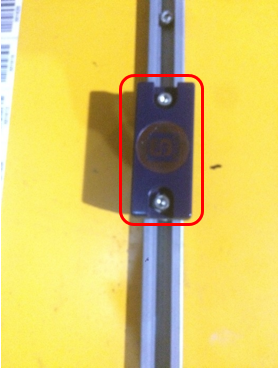

成品库堆垛机x轴、y轴、z轴学习方法
适用范围
堆垛机在运行过程中，出现定位不准，或者定位坐标丢失时，需要定位坐标重新学习
作业准备 (安全评估、工具准备)
作业安全因素
进入高架库要戴好安全帽，操作堆垛机过程中防止伤人；作业过程应将堆垛机置于本地模式
工具准备
堆垛机手操器，安全帽
作业步骤
1、X轴、y轴的学习
1)将堆垛机打到本地模式
2)进入堆垛机巷道,把钥匙开关打到“0”位并拔下钥匙（要点：钥匙随身携带）
从安全门进入堆垛机巷道（要点：关闭安全门时，确保安全门上的连锁开关闭合）
3)接上手操器（要点：手操器接口上的缺口要对准机柜上接口的缺口）
4)开启堆垛机紧急模式
用标有“10”的钥匙插上上面的钥匙开关并打到“1”位，按下绿色按钮启动堆垛机
5)控制堆垛机，使载货台的位置位于x轴，y轴的中间位置
（要点1：中间位置为x轴，y轴中间的两个磁感应开关之间）

（要点2：检查x轴，y轴上每个货位的反光条，确保反光条的位置正确，没有缺失）

（要点3：由于堆垛机停止位置会有误差，在学习x轴的时候，滑触线上的第一个反光条反光部分需要加长，如下图）
6)重置x轴、y轴
手操器上点亮“Master touch-panel”后，点击“servicing”，再点击“Reset teach-in values”进入重置界面
点亮“x”、“y”，长按“Entry OK”直到“x”、“y”熄灭（要点：如果只是学习其中一个轴，只需要点亮相对应的轴)
7)关闭紧急模式
钥匙开关打到“0”位，拔下钥匙并随身携带，断开手操器连接
8)退出堆垛机巷道，关闭安全门
（要点：确保堆垛机巷道里面没有人和杂物，确保安全门上的连锁开关闭合）
9)插上钥匙，钥匙开关打到“1”位置，并按下启动按钮
10)在工控机上手动下达一个任务，堆垛机自动进入x轴y轴的学习，学习完成后，堆垛机会停在下达任务的位置上
（要点：手工下达的任务，只能是货架号位置，不能为输入口“EP”和输出口“AP”）
2、z轴的学习
1）将堆垛机打到本地模式
2）进入堆垛机巷道
把钥匙开关打到“0”位并拔下钥匙（要点：钥匙随身携带）
从安全门进入堆垛机巷道（要点：关闭安全门时，确保安全门上的连锁开关闭合）
3）接上手操器（要点：手操器接口上的缺口要对准机柜上接口的缺口）
4）开启堆垛机紧急模式
用标有“10”的钥匙插上上面的钥匙开关并打到“1”位，按下绿色按钮启动堆垛机
5）手操器上点亮“Master touch-panel”后，点击“servicing”，再点击“Encoders and speeds”进入z轴货叉控制界面
调整货叉使货叉处于中间位置（要点：确保货叉两端对齐，两端的光电开关没有被触发)
6）退出控制界面后，点击“Reset encoders”进入重置界面
点亮“z”，长按“Entry OK”直到“z”熄灭，z轴重置完成
(要点：Z轴重置后，货叉在中间位置时，“LHD’S at center”灯亮)

7）关闭紧急模式
钥匙开关打到“0”位，拔下钥匙并随身携带，断开手操器连接
8）退出堆垛机巷道，关闭安全门
（要点：确保堆垛机巷道里面没有人和杂物，确保安全门上的连锁开关闭合）
9）插上钥匙，钥匙开关打到“1”位置，并按下启动按钮
效果检查
验收标准
堆垛机载货台上两端的光电开光没有被触发，重置后“LHD’S at center”灯亮
堆垛机在x轴y轴上能正常行走
作业结束
工具无遗落